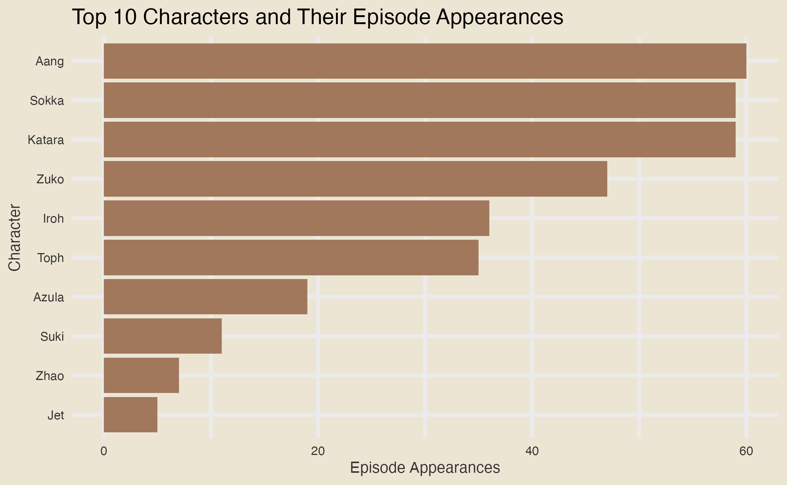
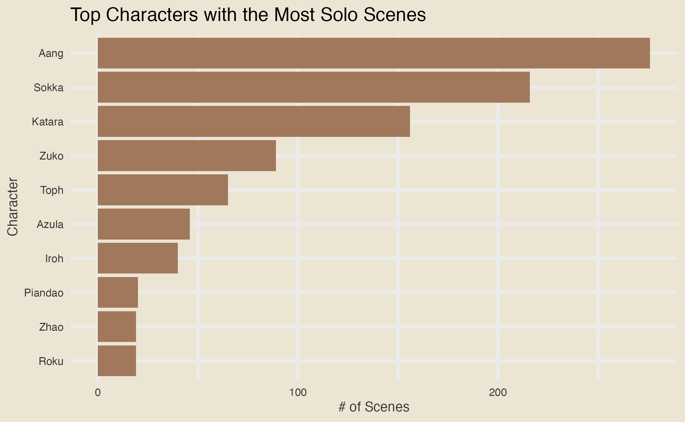
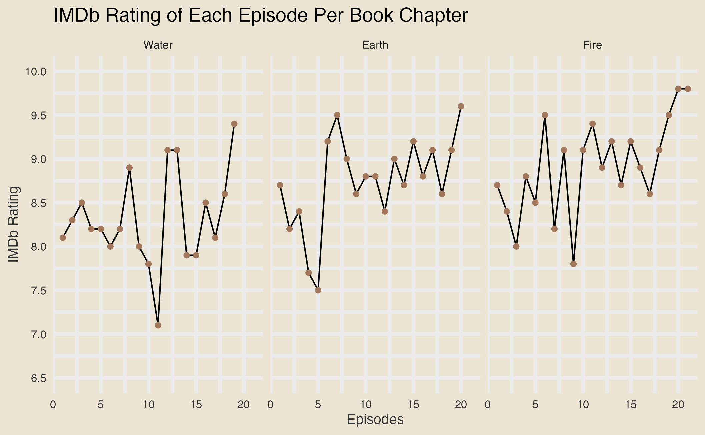

3 Results
3.1 How often does Aang speak in the show? What about each season? Does his friends, Katara, Sokka, Toph, and Zuko, begin to talk more than him?
3.1.1 How often does Aang speak in the show?
To begin our analysis on the appa R package data set created by Avery Robbins, we decided first to explore the question of “How often does Aang speak in the show? What about each season? Does his friends, Katara, Sokka, Toph, and Zuko, begin to talk more than him?” To do this, we decided to get the total amount of dialogue spoken by every character throughout the show and focused only on the top 10, as there were over 300 characters, including the supporting and background characters.
With no surprise, the main characters in Team Avatar, Aang, Katara, Sokka, Toph, and Zuko, were among the top 10 with the most dialogues/lines throughout the show, where Aang had the most dialogue of about 25%. Thus, answering the first part of our question of how often Aang speaks throughout the show. Additionally, we can see that the male characters in Team Avatar spoke way more than the female characters where the males spoke about 68% of the time in Team Avatar, whereas the females spoke about 32%. Lastly, we can see important characters like Iroh, Azula, and Suki were among the top 10, which makes sense as each played a significant role in some member’s development in Team Avatar.
However, one thing about this graph that caught our attention was that side characters like Zhao and Jet were among the top 10. This piqued our interest as we recall them appearing infrequently in the show. As a result, this made us curious where we decided to see how many episodes each of these top 10 characters with the most dialogues/lines were in.
3.1.1.1 Top 10 Avatar the Last Airbender Character with the Most Dialogue Episode Appearances

As you can see, our suspicions about Zhao and Jet appearing infrequently in the show were correct. Despite Jet only appearing in 5 and Zhao appearing in 7 episodes, they still made it among the top 10. What’s even more interesting is that we can see characters like Suki, who appeared in more episodes than Jet, had fewer dialogues than him by a small amount. Similarly, we can see the same case for Toph and Uncle Iroh. Despite Iroh appearing slightly slightly more in episodes, Toph still had about 200 more dialogue than him. This was quite a surprise as we expected Iroh to have more given the many life lessons and quotes he gives to the members of team Avatar, especially Zuko.
All in all, by using the following two graphs together, we can see that the majority of the top 10 characters with the most dialogues/lines throughout the show are the one who often appear in episodes. This can be seen for Aang, Sokka, Katara, and Zuko, as they remain in the top 4 in both graphs in the same order. Furthermore, with the help of both graphs, we can see a few exceptional cases where some of the top 10 characters appearing in fewer episodes have more dialogues than those who appear often.
3.1.2 Top Characters with the Most Solo Scenes
This naturally led us to wonder not only about the frequency of dialogue but also about the moments when these characters were given the spotlight on their own. To explore this further, we analyzed the top characters with the most solo scenes, as these moments often reveal critical aspects of their personalities and contributions to the story. Here’s what we found:

As expected, the main characters dominate the top 10. However, this graph also features new characters not previously highlighted, such as Piandao and Roku, who played significant roles in the episodes “Sokka’s Master” and “The Avatar and the Fire Lord”, respectively.
3.1.3 What about each season? Does his friends, Katara, Sokka, Toph, and Zuko, begin to talk more than him?

Having answered the first question of how often Aang speaks in the show, to answer the second part of our question of how much he speaks per season, we decided to keep the top 10 characters with the most dialogue and found the frequency of each per season. From this, we can see that Aang speaks less per season. Starting from the Water Book Chapter, he had a marginal amount of dialogue compared to all the other top 10 characters, where he had more than 150 lines than Katara, who was number 2. However, this began to change during the Earth Book Chapter, where his dialogue dropped by 300, leading Sokka to overtake him in both the Earth and Fire Book Chapter. Thus, answering our second part where, among the members of Team Avatar, only Sokka began to talk more than Aang.
Although this graph was mainly created to help answer the second part of the question, it still is really meaningful as it also allows us to observe how important each character becomes and their roles during each season. For instance, we can see that Zhao had a pretty important role during the Water Book Chapter but not the Earth and Fire Book Chapter, as his number of dialogues dropped to 0. Another example that we can see from the graph is the rising importance of Toph, Zuko, and Suki towards the show as their number of dialogues began to increase each season.
3.2 What are the trends of IMDb ratings throughout the show?
3.2.1 IMDb Ratings Trend Per Book Chapter
To discover if there are any trends regarding IMDb ratings for the show, we first grabbed all the episode names, episode number,and their IMDb rating where we then faceted over their respective book or season and got the following:

From this, we can see the trend of each episode with respect to their chapter book. Starting with Water Book or Season 1, we can see a lot of fluctuation going on where in the first 7 episodes, it was consistent where it was between 8 - 8.5 IMDb rating. Afterward, it kept going up and down from episodes 8-17 between 7 - 9.1, and then, for the last few episodes, it went up slowly to 9.3. Unfortunately, as mentioned in the “Missing” section, we are missing one episode, which is the last episode in the water book chapter.
Next, Earth Book or Season 2, starts with a lot of fluctuation for the first 12 episodes, with a rating between 7.5 and 9.5. Afterward, the fluctuation becomes slowly consistent, where it jumps up and down each episode, leading to the last episode having an IMDb rating of 9.6. Lastly, Fire Book or Season 3, goes through way more fluctuation compared to the first two season where the first 17 episodes drastically keeps jumping from rating between 7.8 and 9.5. However, this began to change in the last 4 episodes, where the fluctuation then began to only increase, leading the last episode to have a 9.8 rating.
Overall, these three-faceted graphs are helpful for those curious to see rating fluctuation for each book chapter and to see each episode’s impact on each book chapter as well. The only downside is that comparing episode ratings with other episodes in different chapters can be challenging despite the three-faceted graphs being on the same scale.
3.2.2 IMDb Ratings of all Episodes Colored by Book Chapter
To resolve the above graph challenge of comparing episode ratings with other Book Chapters, we created a Cleveland dot plot where we displayed all the episode names, sorted them based on the IMDb rating in descending order, and colored each one to their corresponding chapter. With this, we can now easily compare all episodes in each season simultaneously.
For example, we can see that most episodes with higher IMDb ratings come from the Fire Book Chapter, whereas episodes with lower IMDb ratings come from the Water Book Chapter. Furthermore, we can see that episodes from the Earth Book Chapter had evenly distributed IMDb ratings. Some were in the lower end with episodes from the Water Book Chapter, some were in the middle, and some were in the higher end with episodes from the Fire Book Chapter. Lastly, we can see gradual changes in the IMDb rating, which generally increases as we progress through each chapter, from Water to Earth and then Fire, indicating improvement in the story as it begins to capture more of the audience’s or viewers’ attention.
All in all, with the help of the Cleveland Dot plot, we were able to quickly form comparisons regarding all the episode IMDB ratings in each book chapter and gain further observation and insight about them, which would not have been possible or rather tricky with just the three-faceted graph alone.
3.2.3 Does a particular main character’s appearance in the episode impact the IMDB Rating positively or negatively?
Since we only have ratings per episode, one way to approach this question is to calculate the average rating for episodes where each character appears. However, this approach requires careful consideration to avoid two main issues:
Background Characters: Many minor characters may appear only once in a highly-rated episode. Even if they are irrelevant to the plot, their presence would be associated with a very high score.
Limited Appearances: Even if a character is crucial to an exceptional episode, if they appear in only one episode, it’s difficult to conclude that the high rating is directly because of them.
To address these challenges, we applied the following filters to the data:
Character Frequency: We only considered characters who were relevant in more than one episode.
Defining Relevance: A character was deemed relevant in an episode if they had at least 15 participations in that episode. This threshold was chosen because the average number of participations for main characters in an episode ranges between 17 and 35.
After applying these filters, we produced the following graph:

The graph reveals that episodes where the two main antagonists of the show, Ozai and Azula, had significant relevance tend to have the highest ratings. This confirms the notion that a great antagonist is vital to a show’s success.
Azula’s case is particularly noteworthy. Among the top five characters, she stands out as the only one with more than three relevant episodes. With seven episodes and the second-highest average rating, Azula demonstrates consistency, proving how much fans love to hate her.
But we can’t discuss Azula without mentioning her brother, Zuko—a fan favorite and the main cast member with the highest average rating. Over 27 episodes where Zuko was relevant, he achieved an impressive average rating of approximately 8.8.
In the middle of the graph, we find two other fan favorites, Toph and Iroh. While their averages are below 8.8, both characters maintained strong and consistent ratings across more than ten episodes in which they were relevant.
At the bottom of the graph, we see the three main characters. However, since they were relevant in almost every episode of the show, their averages reflect the overall show rating rather than individual character-driven ratings.
Excluding the main characters, the episodes with the lowest fan ratings were those where Suki and Jet had significant relevance. Interestingly, both characters had romantic storylines with members of the main cast.
3.3 How often does each pair of main characters interact with each other? For instance, how often does Aang interact with Katara, Sokka, Toph, or Zuko throughout the show? What about the others? How often does Katara interact with Sokka, Toph, Zuko, etc?
3.3.1 Top Interactions Throughout the Entire Show

We define an interaction between a set of characters as occurring whenever they share a specific scene in the show. This metric allows us to quantify and highlight the most significant character dynamics throughout the series. As the graph illustrates, it’s no surprise that the original Team Avatar—Aang, Katara, and Sokka—leads with the highest number of interactions.
When analyzing the interactions between male and female members of Team Avatar, we notice some differences that may be attributed to several factors. For instance, the number of interactions involving the male characters Aang and Sokka is around 250, while the interactions between Katara and Toph are approximately 100—less than half. One key reason for this disparity is the inclusion of Toph, who joined the team in the second book, shifting the dynamic. Additionally, if we recall the show, the relationship between Katara and Toph was initially strained. Their contrasting personalities and frequent disagreements in the beginning made their bond slower to develop compared to the already strong relationships within the original trio.
One notable observation is the presence of Iroh among the top interactions, despite not being part of the main cast. His inclusion highlights his pivotal role in the show, particularly through his relationship with Zuko, which is central to Zuko’s character arc.
3.3.2 Top Interactions Per Book
In this graph, we can see the evolution of Team Avatar, particularly the integration of Toph in the second book. Starting in the second book, the set of Aang, Katara, and Sokka began to share fewer scenes, and by the third book, the set with the most scenes became Aang, Katara, Sokka, and Toph.
The inclusion of Zuko into Team Avatar is less apparent, as it becomes increasingly challenging to have full scenes featuring five or more characters simultaneously. However, in the third book, we see him begin to interact more consistently with the rest of the main cast.
Notably, the only two pairs of characters that remain in the top 10 interactions throughout the show are Aang and Katara, and Aang and Zuko. Even iconic interactions like Iroh and Zuko, as well as Katara and Sokka, do not make it into the top 10 by the third book.
3.3.3 How often does each pair of main characters interact with each other?
While measuring interactions between characters as sets is insightful—especially for observing team dynamics (as we did with Team Avatar)—it’s equally interesting to examine interactions between individual pairs of characters.

The graph shows how the main cast’s interactions evolved from primarily involving one or two characters in the first book to involving up to four by the third book. An exception is Zuko, who in the first book primarily interacted with his uncle Iroh but also had minor interactions with the rest of the main cast. In the second book, nearly all his interactions were limited to Iroh, but by the third book, his interactions with his uncle disappeared as he began consistently engaging with the rest of the main characters.
Additionally, we notice how the interactions among Aang, Katara, and Sokka remained consistently high throughout the series, even as their interactions expanded to include other characters in later seasons.